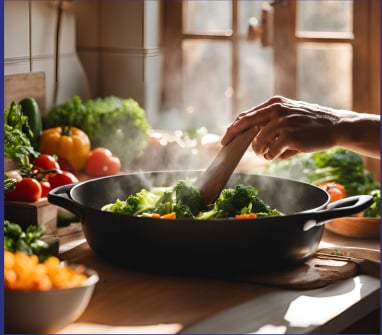

Chef Davis is a South Carolina native born and raised just outside of the Myrtle Beach area. Growing up with a diverse family of talented cooks, he learned and studied the art of southern cuisine and began to slowly build his own cookbook of different popular southern as well as worldly dishes. With a background in technology and a love for food, he brought the two together to create INDIGO, an immersion of warm comfort foods, cool music, and good atmosphere.
